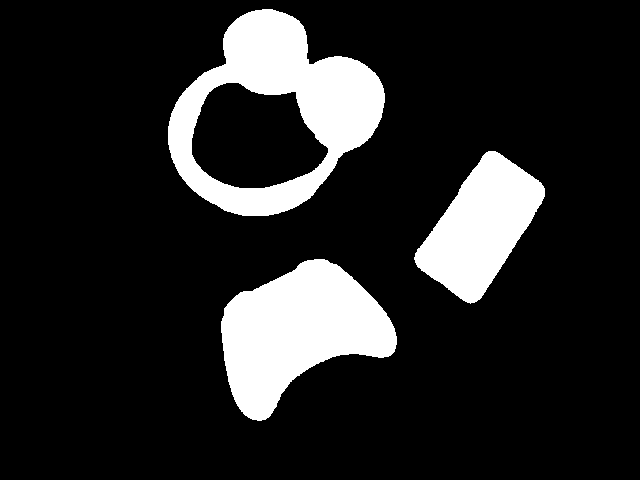
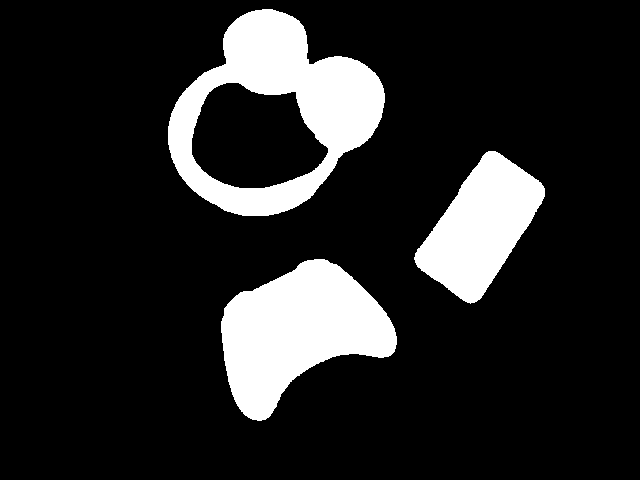The OR2D program is a real-time 2D object recognition program which uses thresholding to isolate regions of an image, segmentation to label those regions, and computes moments on those regions to extract translation and rotation invariant features about the object. Once those features have been aquired, they are labeled and saved to be used for classification.
This is the first step in the object recognition pipeline. With the program running, press t to threshold the image. The user will be prompted enter the intensity value with which to threshold the image. The result will be a binary image with the background in black and the object in white.
As a final step, the system will perform morphological operations to clean up the threshold image. Specifically, it will dialate and then erode the threshold image. This means it is best to select a threshold value on the lower side so as to minimize the chance of island regions. Dialation will fill most gaps in regions that represent the same object which may result from the lower threshold value.
Examples:
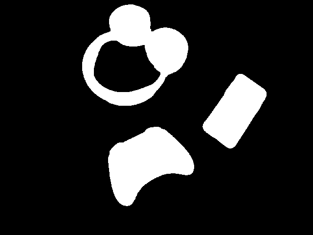
This step succeeds the threshold step and labels each region with an id, coloring the regions as well. To segment an image, press s. The user will be prompted to enter the max number of regions to segment. While this step does not discard regions that are considered too small to constitute an object for recognition (< MAX_REGION_PIXELS), the Feature step will ignore small regions when computing features and so they will not be labeled or classified by the system.
Examples:
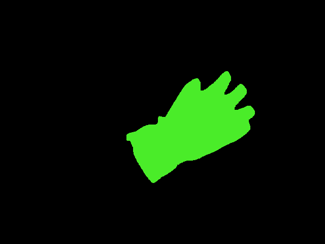
 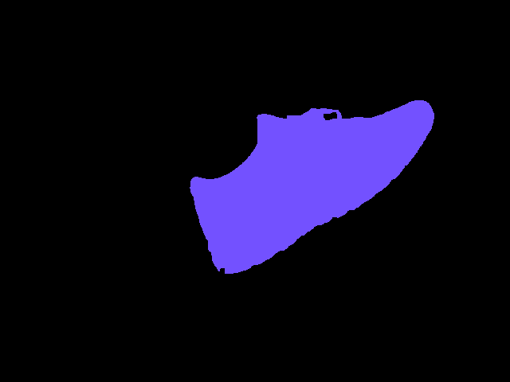
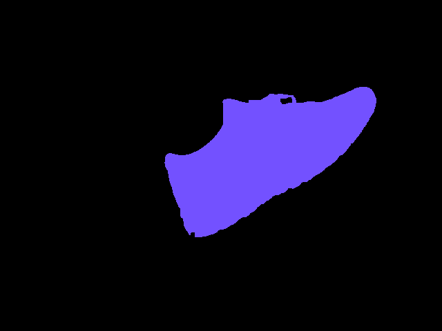
This step follows the segment step and computes translation and rotation invariant features for each region in the segmented image. These features, such as the oriented bounding box, are drawn on the image and displayed. Press f to compute features on the image.

This step takes the features computed a region and labels them, storing these features in a file in the labels/ directory. Each file can store multiple samples. To initiate this step, press l. The user will be prompted to enter the label of the object. This will capture one feature sample and save it to the data file. To capture another, simply press l again and repeat the process.
Note: this step assumes that only one object is present in the image. If there are multiple objects, whichever object is labeled as region 1 will be labeled.
This step classifies an image by computing its features and finding the closest matching feature set from the datafiles in the labels/ directory. Press c to classify objects. It uses the following equation to compute the distances (where Feature_A is a feature from the image to classify and Feature_B is that same feature from a labeled sample in the database):
float distance = 1 - (min(feature_A, feature_B) / max(feature_A, feature_B))
There is also the ability to classify objects using a K-nearest neighbors classifier. Press k to classify objects using this algorithm. The user will be prompted to specify the value for K (the number of numbers to sample for each label).
Examples:
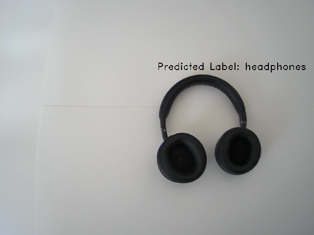
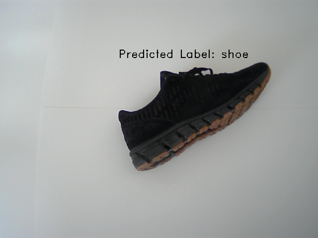
 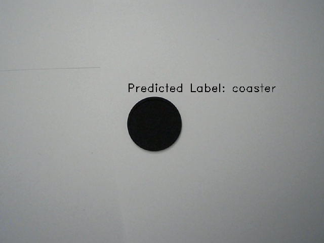
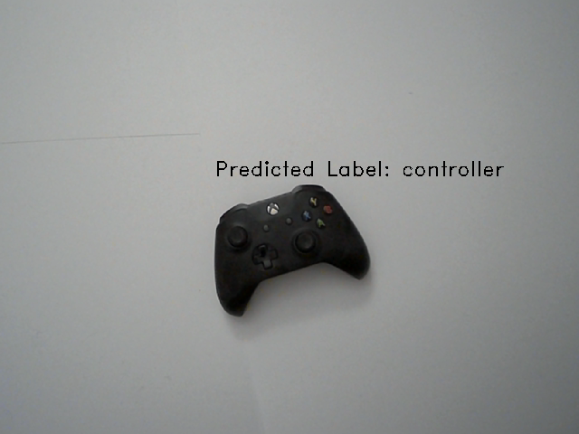
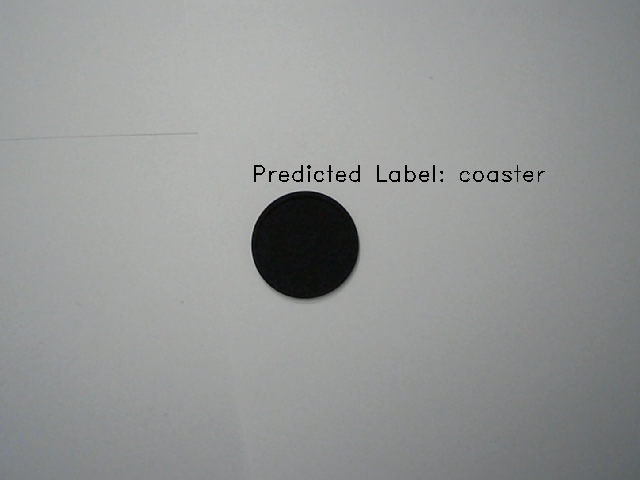
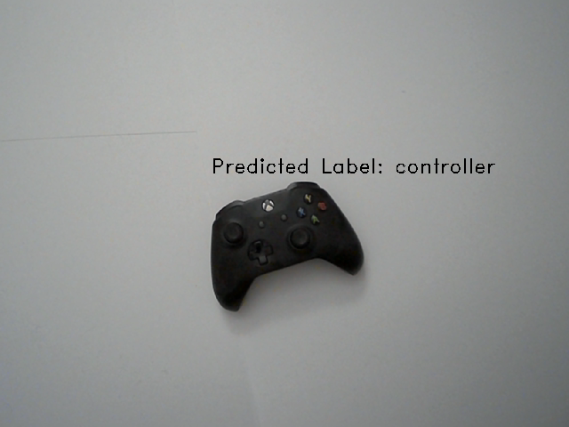
 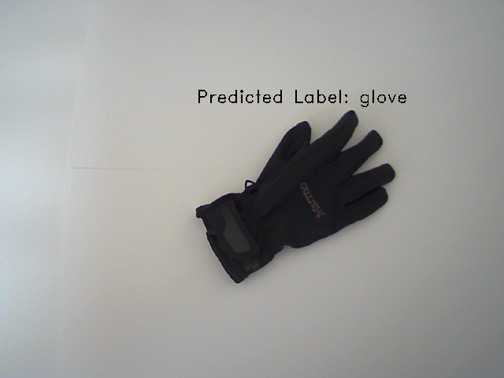
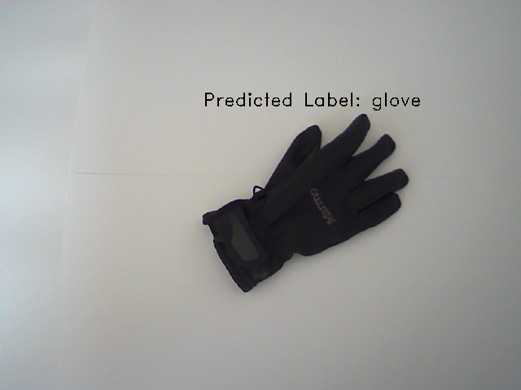


To evaluate the performance of the system, I ran 5 classifications for each of the 10 objects known to the system. I also ran classifications for new objects the system had not yet seen, but were similar to known objects. For example, while the system was given features for one set of headphones, I ran classification on a different set of headphones which looked similar.
Overall the system performed well. Misclassifications only took place when the object was partially out of the camera frame or there were significant shadows present. The one exception to that was the glove, which had a tendancy to be misclassified as a flipflop even when well lit and within the frame.
Objects


Unlabeled Objects


Confusion Matrix:
(Actual on the top row, Prediction along the side)
| Actual ⬇ | Predicted ➡ | Coaster | Controller | Flipflop | Glove | Hat | Headphone | Phone | Remote | Shoe | Speaker |
|---|---|---|---|---|---|---|---|---|---|---|
| Coaster | 5 | 0 | 0 | 0 | 0 | 0 | 0 | 0 | 0 | 0 |
| Controller | 0 | 4 | 0 | 0 | 0 | 0 | 0 | 0 | 1 | 0 |
| Flipflop | 0 | 0 | 4 | 0 | 0 | 0 | 0 | 1 | 0 | 0 |
| Glove | 0 | 0 | 2 | 3 | 0 | 0 | 0 | 0 | 0 | 0 |
| Hat | 0 | 0 | 1 | 0 | 4 | 0 | 0 | 0 | 0 | 0 |
| Headphone | 0 | 0 | 0 | 0 | 0 | 5 | 0 | 0 | 0 | 0 |
| Phone | 0 | 0 | 0 | 0 | 0 | 0 | 4 | 1 | 0 | 0 |
| Remote | 0 | 0 | 0 | 0 | 0 | 0 | 0 | 5 | 0 | 0 |
| Shoe | 0 | 0 | 0 | 0 | 0 | 0 | 0 | 0 | 4 | 1 |
| Speaker | 0 | 0 | 0 | 0 | 0 | 0 | 0 | 2 | 0 | 3 |
| UNLABELED OBJECTS: | ||||||||||
| Alt. Headphones | 0 | 0 | 0 | 0 | 0 | 5 | 0 | 0 | 0 | 0 |
| Plant Pot | 5 | 0 | 0 | 0 | 0 | 0 | 0 | 0 | 0 | 0 |
| Metal Brace | 0 | 0 | 0 | 0 | 0 | 0 | 2 | 3 | 0 | 0 |
Here is a demo of the system in action: https://youtu.be/iPKZYy79JhM
2-Pass Segmentation
A user can choose to segment the image using the 2-pass segmentation algorithm instead of OpenCV’s
built in connectedComponents() function. Press u to segment an image using this algorithm. To
see the code implementation, see twoPassSegment.cpp.
Multi-object Recognition
As the video shows, the system can classify up to N objects simultaneously, where N is the number of regions specified by the user. To provide this value, press d and a prompt will request the max number of regions to segment.
Extra Feature Detection/Display
For each region, the system computes the bounding box and oriented bounding box, displaying each in the output image, along with the height and width of the oriented bounding box.
Overall, I found this project very rewarding. The program is relatively fast, in that it can process video feed in real-time as objects are introduced and removed. After struggling with the computation for the moments about the central axis and getting the right corners for the oriented bounding box, it was incredibly satisfactory to see it working in action. I’m also happy with my code design. There are always ways I could have improved, but being new to C++ at the start of this course, I am picking up on it relatively quickly. This project I leveraged OOP extensively to minimize code redundancy. Additionally, the nested nature of the pipeline objects makes it easy to create pipelines which terminate at various steps without needing to change the way the controller behaves.
I was also surprised at how well the system was able to classify objects, especially given such limitted feature data (height, width, % oriented bounding box filled, and one moment about the central axis). Of course, this can be attributed to the fact that it was only trained on 10 objects which themselves were very diverse is size and shape. Plus, given the blank white backdrop created a very easy environment for segmentation.